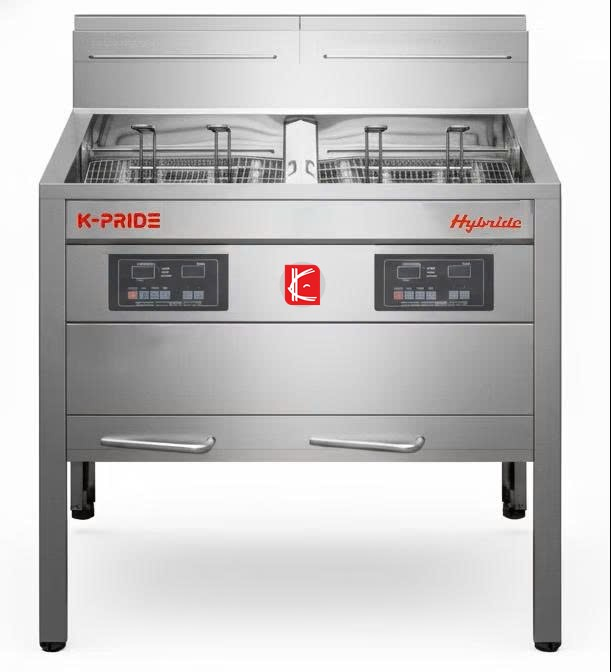
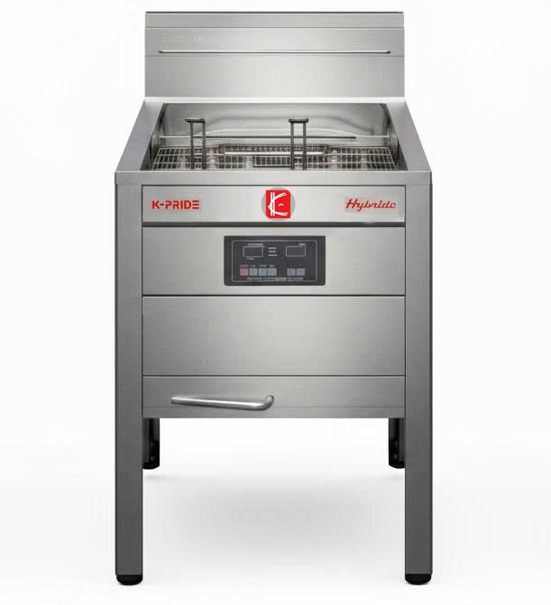
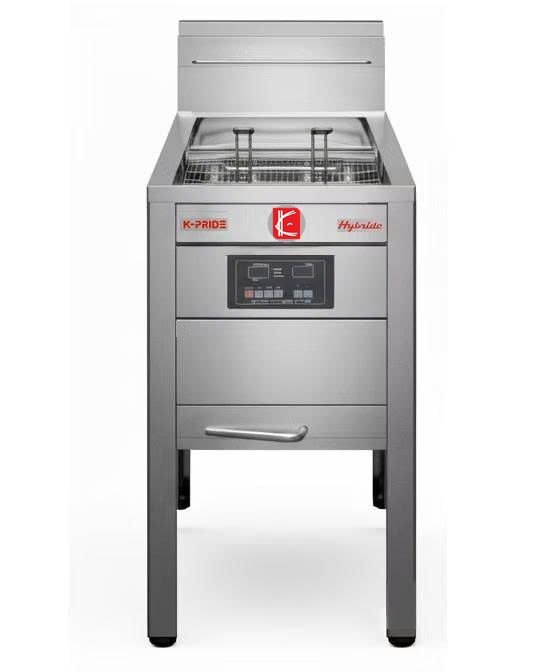

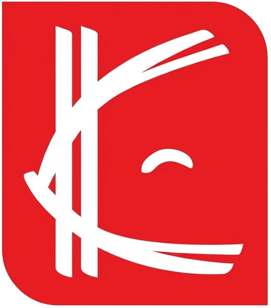
K-PRIDE · COMMERCIAL FRYER키친프라이드의 튀김기 시리즈를 한곳에서 살펴보세요. 제품 사진과 구성은 제공된 이미지 기준으로 소개하며, 상세 사양과 모델은 상담을 통해 확인하실 수 있습니다.
시리즈 살펴보기 ↓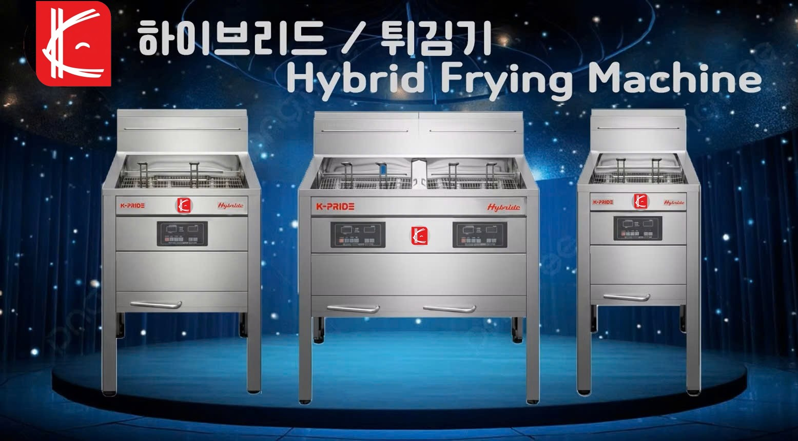
시리즈별 제품 이미지를 먼저 확인하고,
필요한 용량과 설치 조건은 상담으로 안내받으세요.



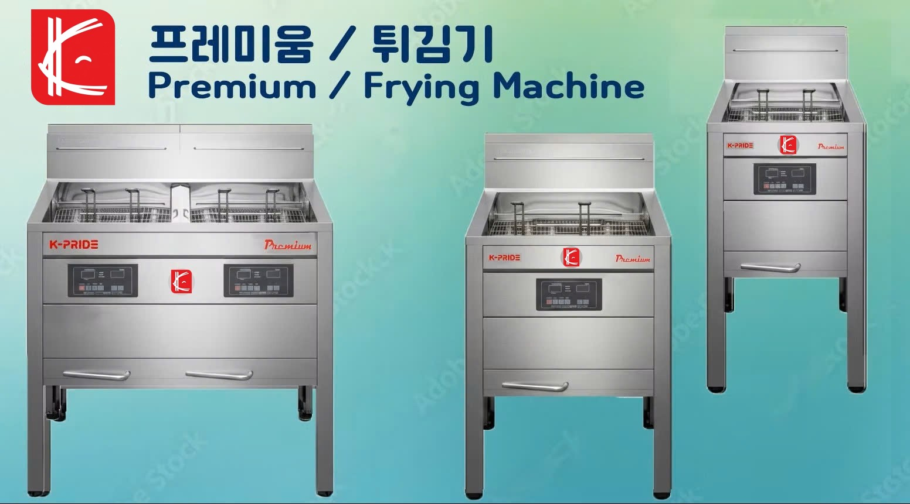
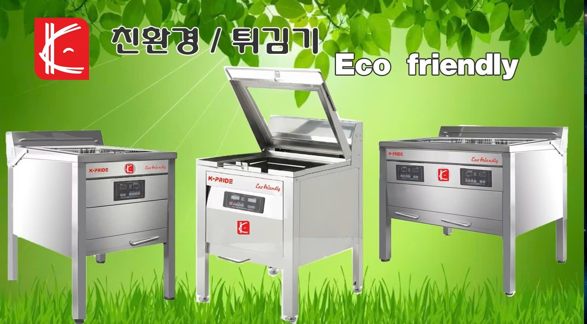
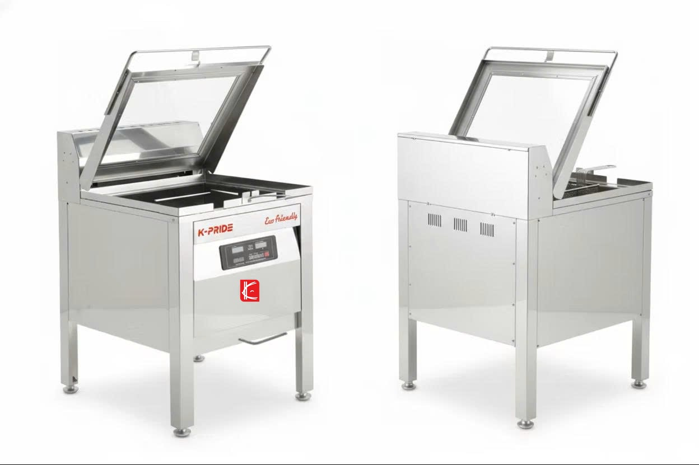
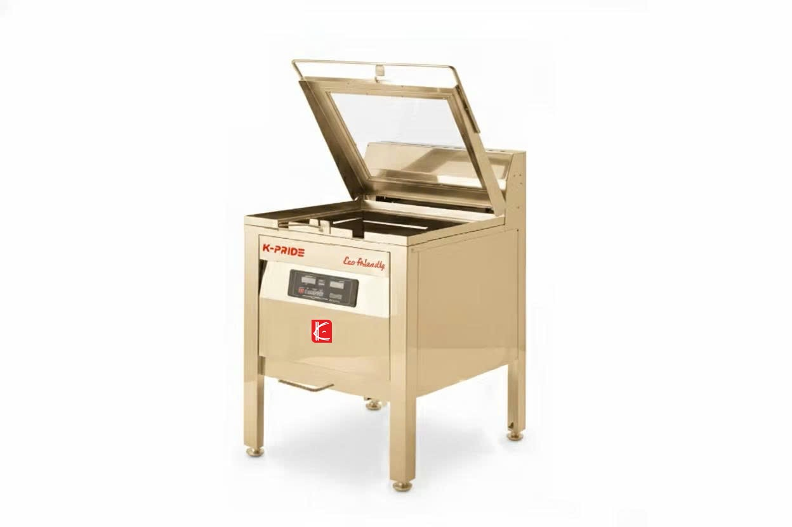
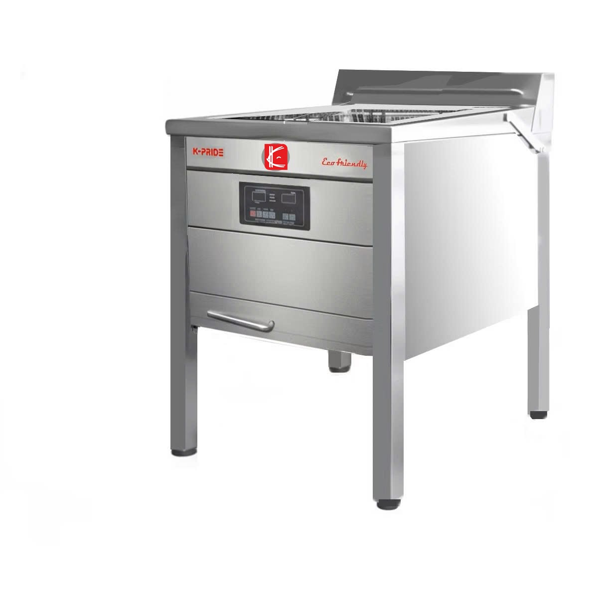
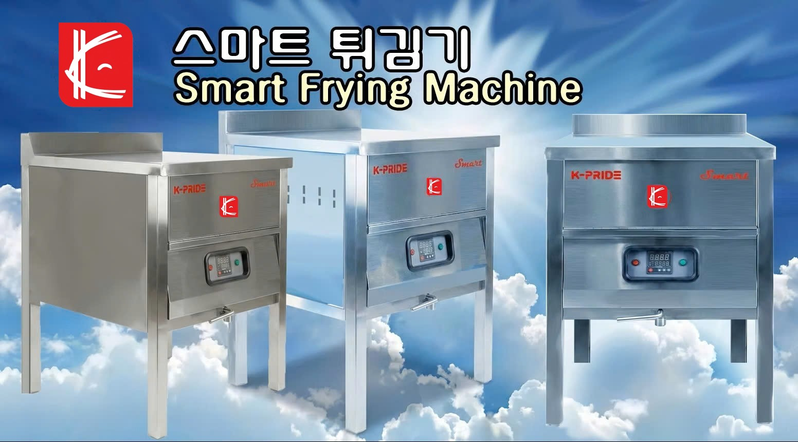
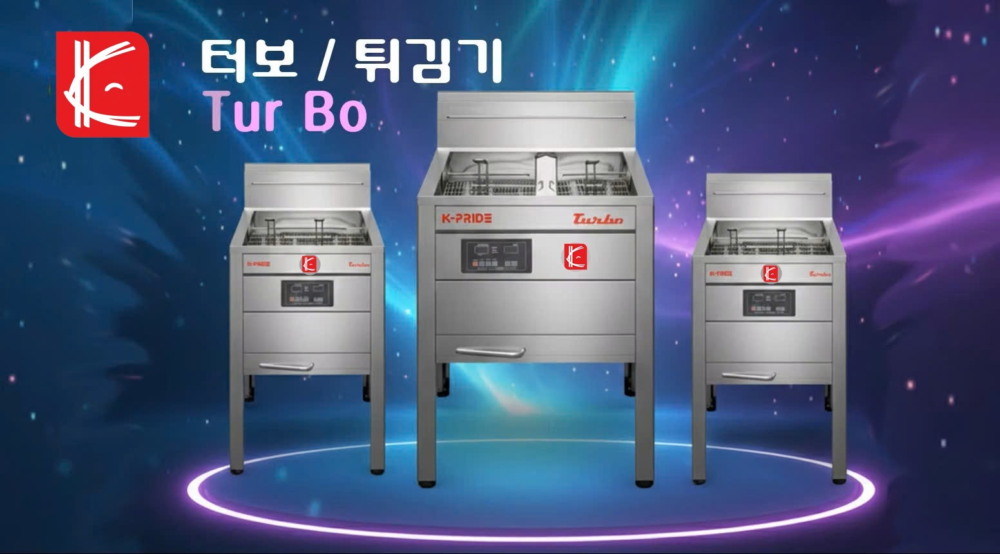
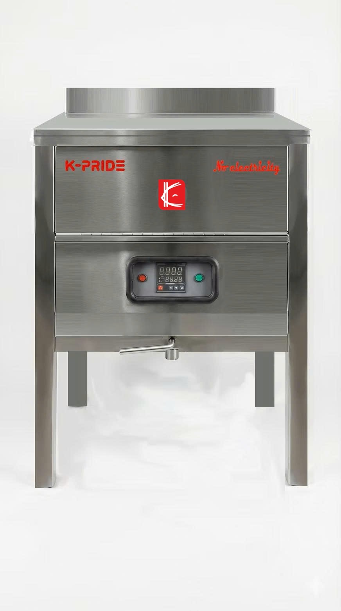
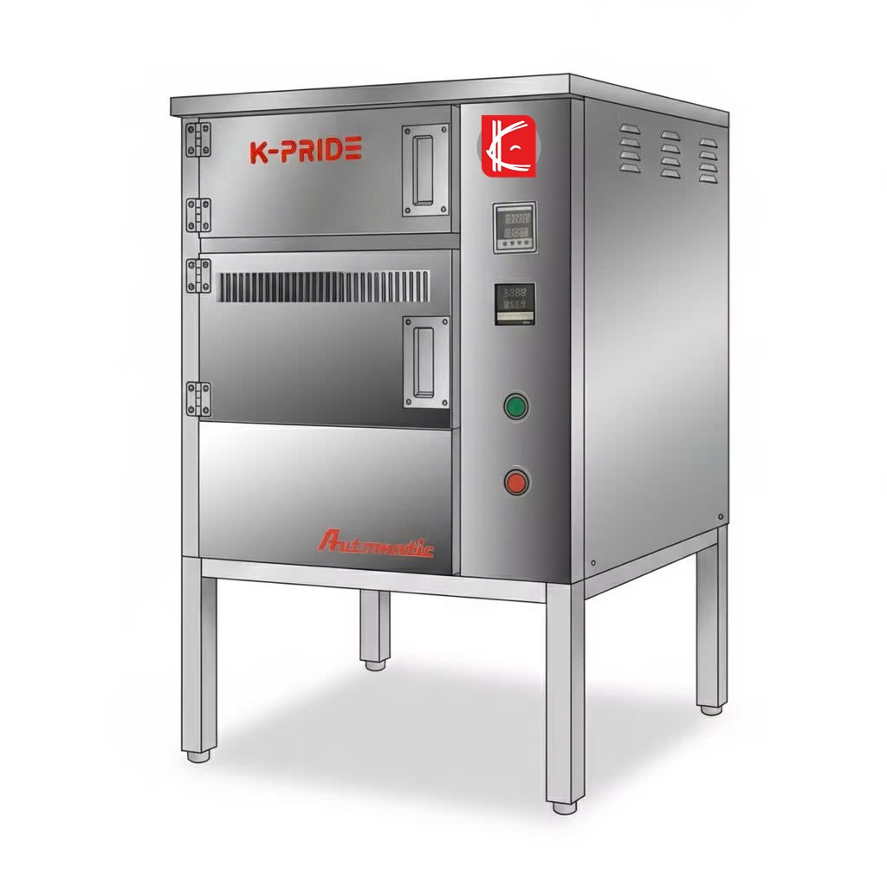
관심 있는 시리즈와 필요한 구성을 알려주시면 안내해 드립니다.